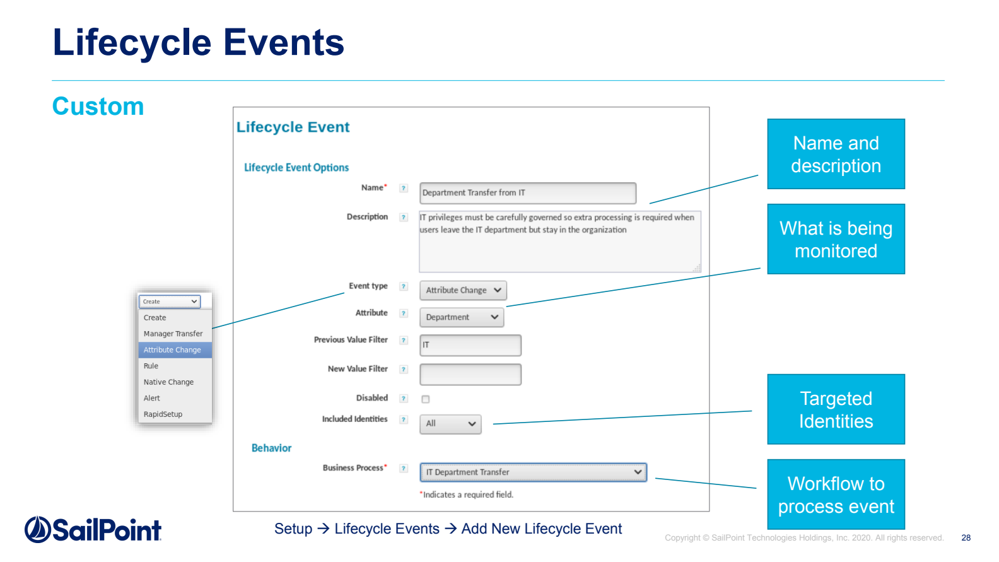
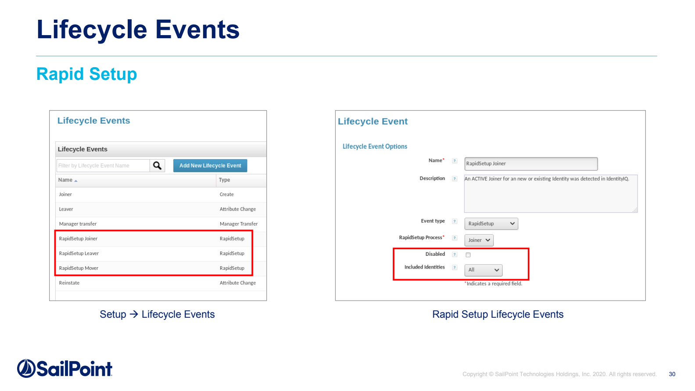
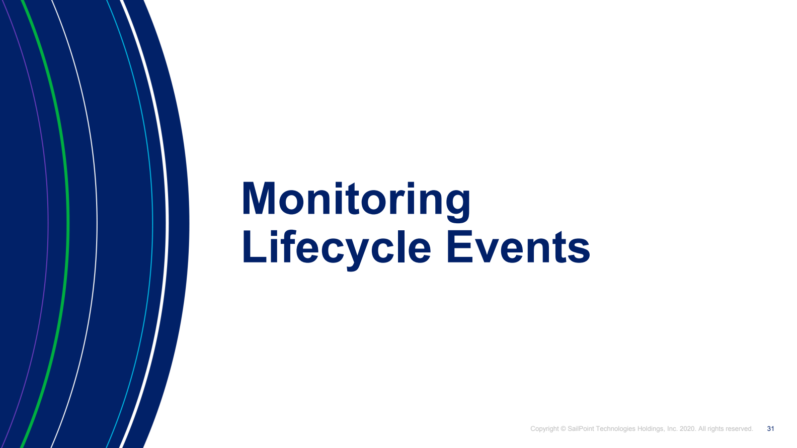
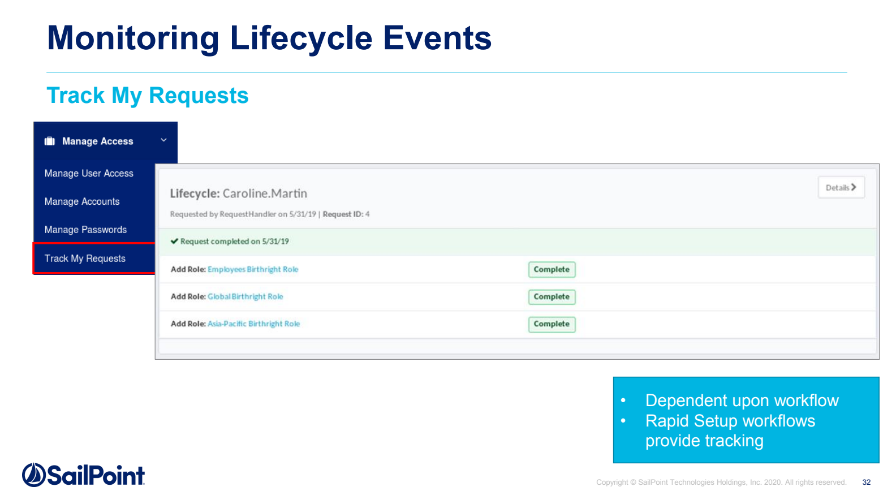
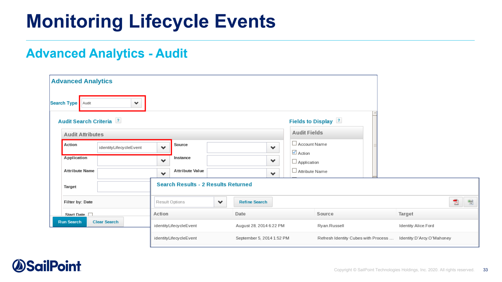
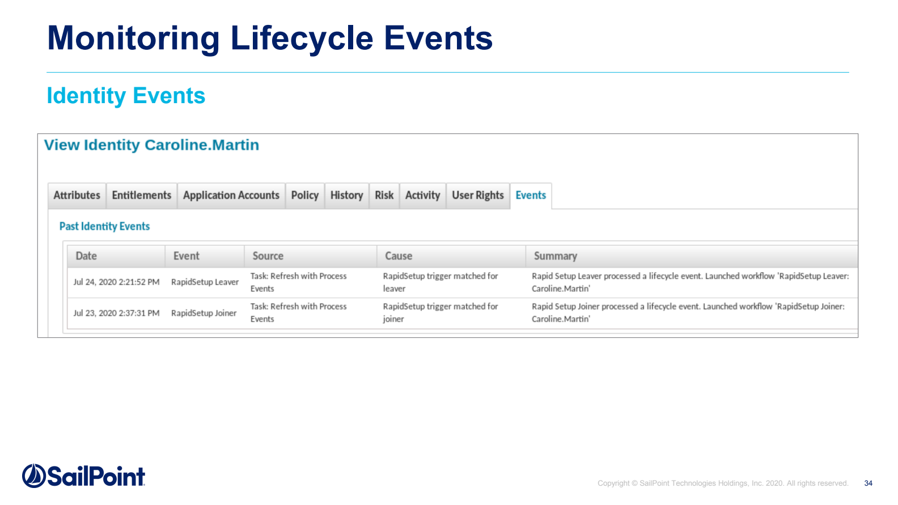

All Essentials modules · Practice companion
24. Lifecycle Event Configuration
Standard and Rapid Setup definitions
Setup → Lifecycle Events provides the standard configuration view. A custom definition supplies its name, monitored change, processing workflow and included-identity criteria. The included-identities filter narrows the population; the event definition identifies the change within that intended population.
Rapid Setup events also appear in the lifecycle-event administration area. The simplified configuration framework does not remove the underlying event/workflow model. The original screens distinguish those generated definitions from an independently configured custom event.





Observe the event through more than one view
Track My Requests can show lifecycle processing when the workflow supplies request tracking; the course says the Rapid Setup workflows do. Advanced Analytics Audit and the identity's event details provide additional evidence. Do not assume a custom workflow automatically writes the same tracking information as a supplied Rapid Setup workflow.
When verifying an example, establish the triggering source/UI change, whether refresh processed events, which workflow ran, whether approvals or manual work remain, and what the application finally contains. A matching trigger alone is not a completed joiner or leaver.





The joiner/mover/leaver practice sections demonstrate this verification pattern using the original training configurations. No event was triggered in the user's VM while preparing the book.
Related practice and source pages
Exercise 4.2 — Joiner Lifecycle Event · Exercise 4.3 — Mover Lifecycle Event